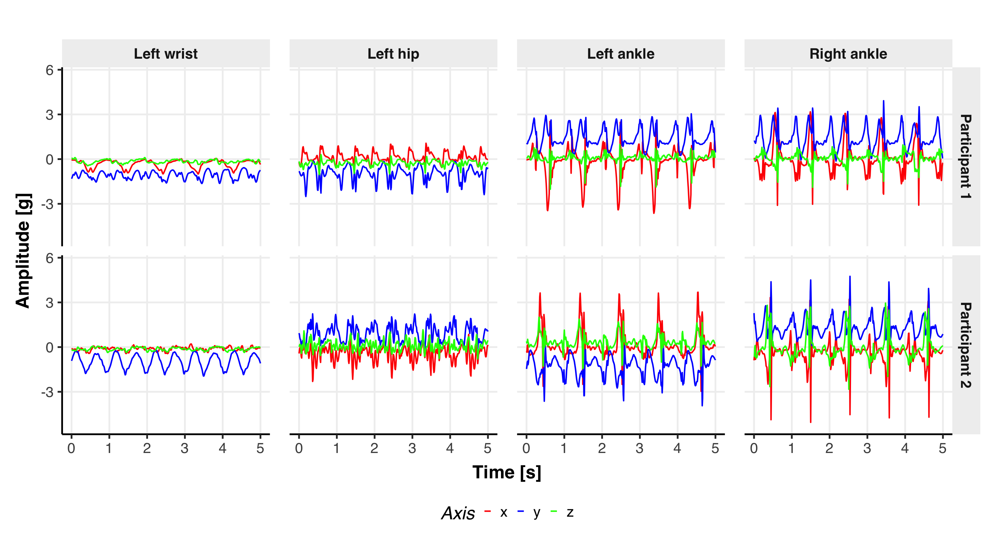
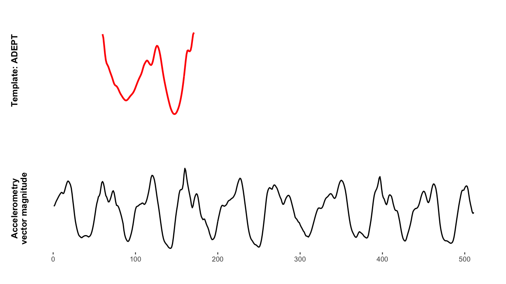

We propose adaptive empirical pattern transformation (ADEPT), a fast, scalable, and accurate method for pattern segmentation in time-series.
Table of Contents
Scientific problem
The motivation for the work was to provide fast and accurate open-source method for pattern segmentation from raw accelerometry data.
The methods were needed for automated walking strides segmentation from accelerometry recordings collected during continuous walking that we had across a number of health studies.
Challenges
The plot below shows an example of raw accelerometry data – three-dimensional time-series of acceleration [g] measurements. Data showed were collected 5 s of walking for two different individuals, with 4 wearable sensors worn simultaneously at wrist, hip, left, and right ankle.

While the repetitive patterns of walking are relatively clear to a human observer, there are a few challenges in segmenting them accurately with an algorithm:
-
There are variations in shape, magnitude and duration of a pattern within individual’s data. These might be e.g. due to terrain elevation changes, or temporal changes of step length and cadence (think about slowing down when approaching the turn of the corridor, or basically walking slower during an evening stroll versus morning rush to work).
-
There is variability of walking data between individuals (e.g. see the plot above).
-
A sensor can move, or be worn on different hands by the same person on different days.
Proposed solution
We propose adaptive empirical pattern transformation (ADEPT) to segment walking stride patterns in vector magnitude of raw accelerometry data.
-
The ADEPT algorithm uses a predefined template and detects its repetitions by maximizing the local distance (i.e. correlation) between (a) collection of scale-transformed templates and (b) the observed data signal.
-
The scale-transformation adjusts the duration of the dictionary template, allowing for the detection of patterns that are shorter or longer than the original dictionary template.
-
Multiple distinct baseline templates can be used simultaneously to account for various shape patterns occurring in the data.
The GIF below demonstrates the big picture of the algorithm.

The underlying template’s scaling and translating along the observed data signal is closely related to the Continuous Wavelet Transform (CWT), $$W_{\Psi}(s, \tau) = \int_{-\infty}^{\infty} x(t) \frac{1}{\sqrt{s}}\Psi \left(\frac{t - \tau}{s} \right)dt.$$ Conversely to CWT’s mother wavelet $\Psi(\cdot)$, ADEPT uses a data-based pattern function (not required to satisfy the wavelet admissibility condition) and comes with a number of other algorithm features tailored for its target application.
Published work
- We published the proposed ADEPT method in work Adaptive empirical pattern transformation (ADEPT) with application to walking stride segmentation Karas, M., Straczkiewicz, M., Fadel, W., Harezlak, J., Crainiceanu, C.M., Urbanek, J.K. (2018). Biostatistics, Volume 22, Issue 2, April 2021, Pages 331–347.
Software
We provided open-source implementation of the proposed ADEPT method in R package adept (CRAN index). The R package is accompanied by two vignettes:
🎉 The adept R package was selected in Top 40 new CRAN packages in May 2019 (list link).
Images used in the post – credit/references
-
Featured image. Figure 2 in the manuscript: Karas, M., Straczkiewicz, M., Fadel, W., Harezlak, J., Crainiceanu, C.M., Urbanek, J.K. Adaptive empirical pattern transformation (ADEPT) with application to walking stride segmentation (2018). Biostatistics, Volume 22, Issue 2, April 2021, Pages 331–347. Link (last accessed on May 26, 2021).
-
Three-dimensional time-series image. Figure 1 in the manuscript: Karas, M., Straczkiewicz, M., Fadel, W., Harezlak, J., Crainiceanu, C.M., Urbanek, J.K. Adaptive empirical pattern transformation (ADEPT) with application to walking stride segmentation (2018). Biostatistics, Volume 22, Issue 2, April 2021, Pages 331–347. Link (last accessed on May 26, 2021).